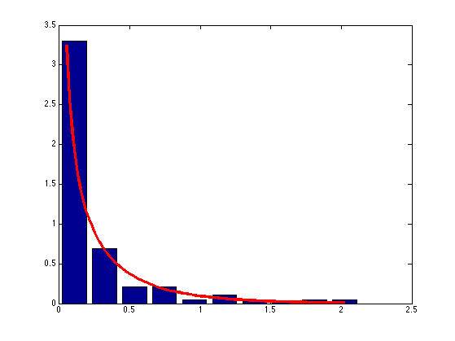
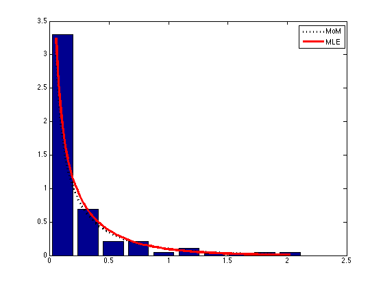

Fit a Gamma distribution to the rainfall data by MLE and moment matching
Rice (1995) p383
Contents
% This file is from pmtk3.googlecode.com function gammaRainfallDemo() X = loadData('rainfall'); X = X'; X = X(:); % concatenate across rows, not columns X = X(1:end-5); % removing trailing 0s [a(1), b(1)] = gamMOM(X); [a(2), b(2)] = gamMLE(X); [v, binc] = hist(X); h = binc(2)-binc(1); N = length(X); areaH = h*N; figure;bar(binc, v/areaH);hold on xs = linspace(0.05, binc(end)); linestyles = {'k:', 'r-'}; for i=2 ps = exp(gammaLogprob(struct('a', a(i), 'b', b(i)), xs)); h(i) = plot(xs, ps, linestyles{i}, 'linewidth', 3); end printPmtkFigure('rainfallDemo'); figure;bar(binc, v/areaH);hold on for i=1:2 ps = exp(gammaLogprob(struct('a', a(i), 'b', b(i)), xs)); h(i) = plot(xs, ps, linestyles{i}, 'linewidth', 3); end legend(h, 'MoM', 'MLE') printPmtkFigure('rainfallDemoMOMMLE'); end function [a,b] = gamMLE(X)
MLE for Gamma a = shape, b= rate (not scale)
[a, s] = gamma_fit(X); b = 1/s;
end function [a,b] = gamMOM(X)
method of moments estimate for Gamma
a = shape, b= rate
xbar = mean(X); s2hat = var(X); a = xbar^2/s2hat; b = xbar/s2hat;
end
 